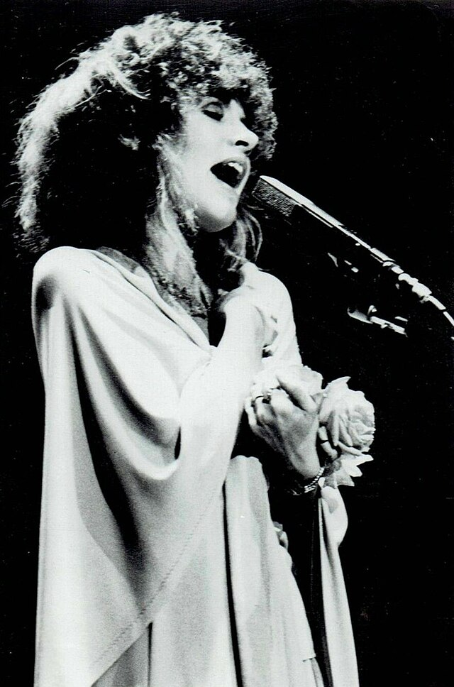
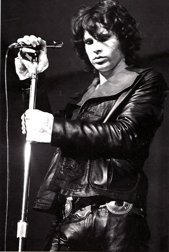
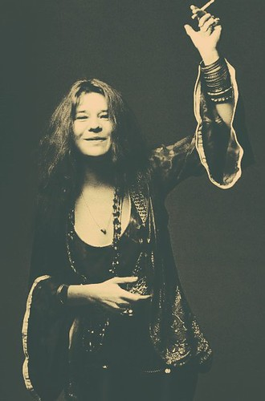

ROCKSTAR LIFESTYLE: The 20th century saw the development and creation of the rockstar lifestyle. Stemming from a switch from post-war to an individual consumerism economy (alongside the booming birth rates), record companies noted the desire for young adults to spend and decided to shape this demographic by creating a “pantheon of musical idols to follow” also spawning the development of the term “rock star.”3 The definition of a rockstar is inherently ambiguous but it could best be defined as “swagger. Imprudence. Sexual Charisma. Utter self-reliance. Damn-the-torpedoes self-belief. A tendency to act on instinct. A particular way of carrying themselves. Good hair. Interesting shoes”.4 Rockstars embodied freedom, self-confidence, and true authenticity. They challenged authority and resonated with feelings of teenage rebellion and unique self-expression. The exuberant hedonism of the 1970s, free-flowing substances, and rule-breaker ecstasy are all associated characteristics of the rockstar lifestyle. Rockstars were immortalized in society, and to an extent seen as otherworldly, mystique individuals. The lack of rock stars in present day society could be attributed to a shift in societal thought, is current society more collectivist in nature? Or, perhaps it is because we are a more social media driven society, we have more access to unique sub-cultures from all over the world, and we face different strifes than from the 20th century. WOODSTOCK: The Woodstock Music Festival took place in Bethel, New York in 1969 and was a “cultural playground overrun by drugs, sex, and rock and roll” and has come to symbolize much of the social and political climate of the United States at the time.5 The event was heavily marketed as “peace, love, and music” as music was used as a form of protest by many artists. Woodstock was also where we see the “hippie lifestyle” flourish which championed love and nonviolence. This counterculture movement bloomed from a rejection of the 1950s suburban lifestyle, traditional gender roles, and predetermined paths. It embraced a nomadic lifestyle, experimentation with LSD and marijuana, bright clothing and dancing with flowers in the hair.6 Even today, images from Woodstock inspire younger generations' sense of style and character. Woodstock represented a rejection of the status quo, the three-day eclipse immeasurably shifted society. It represented a future created by the new generation, “one of the most powerful outcomes of the festival was the country’s realization that people had the power to alter the course of history.”7 IDOLS: STEVIE NICKS: Stevie Nicks witchy, feminine, persona has enchanted people for decades. Once described as, an “autodidactic mystic who viewed the universe through the eyes of middle America”, Nicks’s music has resonated and embodied the strange and misunderstood for generations.8 Famous not only for her work as lead singer in Fleetwood Mac, but also her solo albums, Stevie Nicks has created a celestial aura with her hypnotic voice and unique sense of fashion. JIM MORRISON: Front man of the band, The Doors, Jim Morrison is painted as a brooding bad boy who was immortalized by entering the 27 Club, skyrocketing him to an unbeknownst level of fame as a cultural icon. He was larger than life, “he could be sensitive or surly, charming or sometimes combative, an unabashed hedonist or an urbane aficionado of film, literature and theater”.9 Morrison always wanted to be a poet, and getting into a band was accidental but regardless he was able to touch the hearts of hundreds through his deep-felt music. JANIS JOPLIN: Joplin also considered an idol and representation of the cultural movement of the time, was known for “her charm, her lore, and her gut-level emotional appeal.”10 She "lived outside of the mainstream”, her raw, gritty approach was authentic and while her lifestyle was glamorous, and she achieved stardom she ultimately became a part of the 27 Club like Morrison.11
  